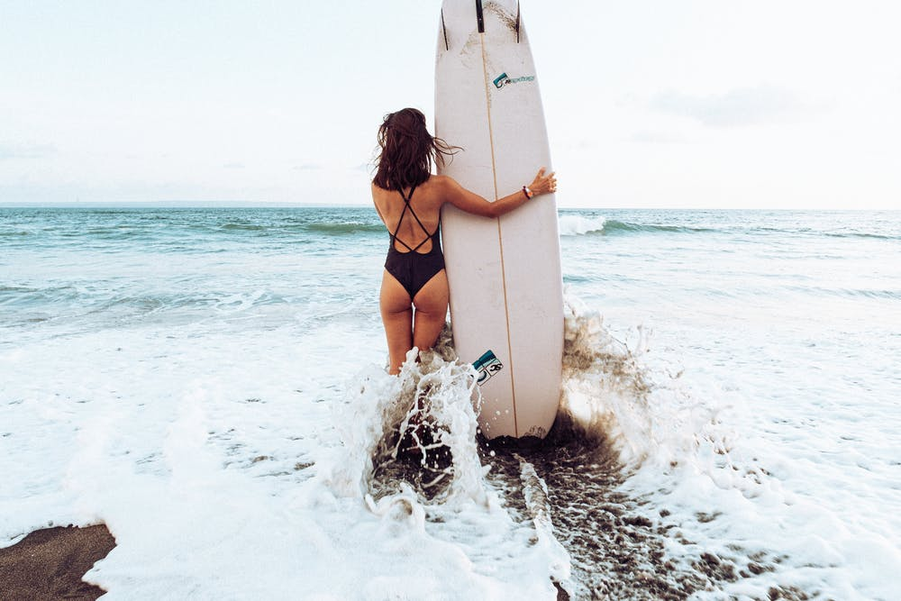
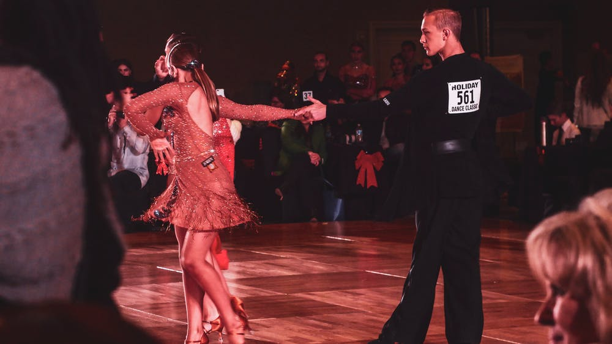
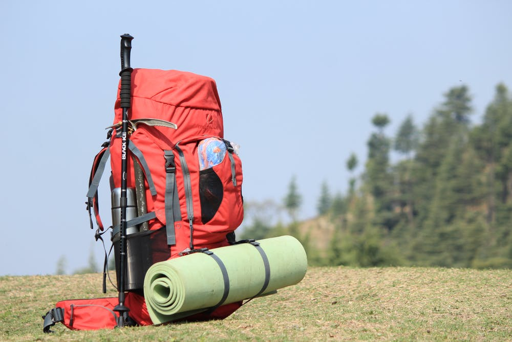
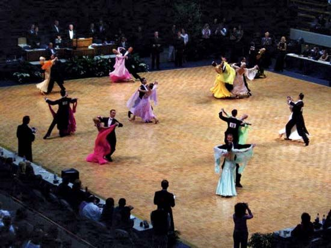
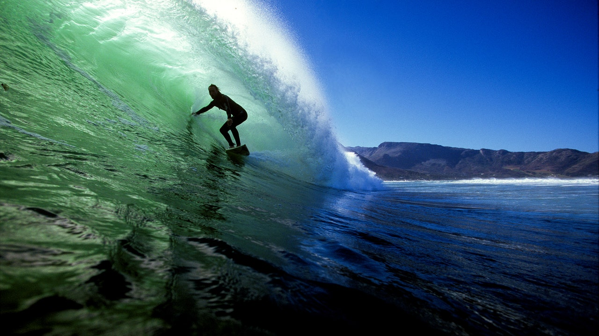
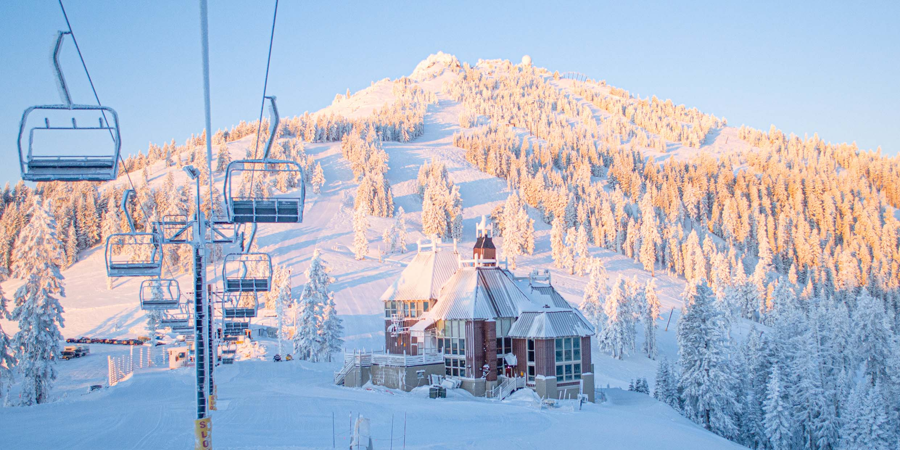
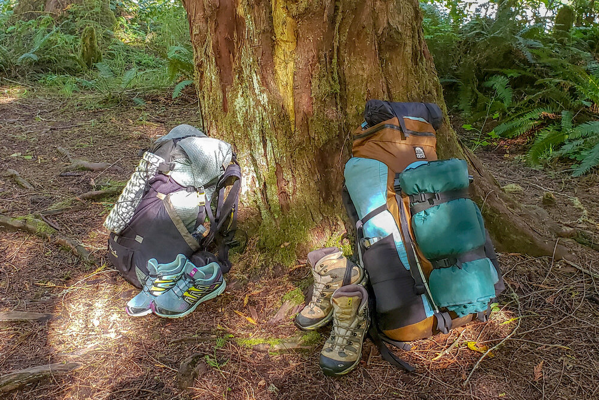

Let me introduce more about myself! I like surfing, edm, ballroom dancing and back packing! I believe that there is a difference between the pleasures of the moment (hedonia), and the satisfaction that comes from constantly developing and living one’s life to the fullest (eudaimonia). In recent years, scientists have finally begun to study eudaimonia. Research suggests that the greater sense of purpose and personal growth associated with eudaimonia correlates with lower cortisol levels, better immune function, and more efficient sleep.








